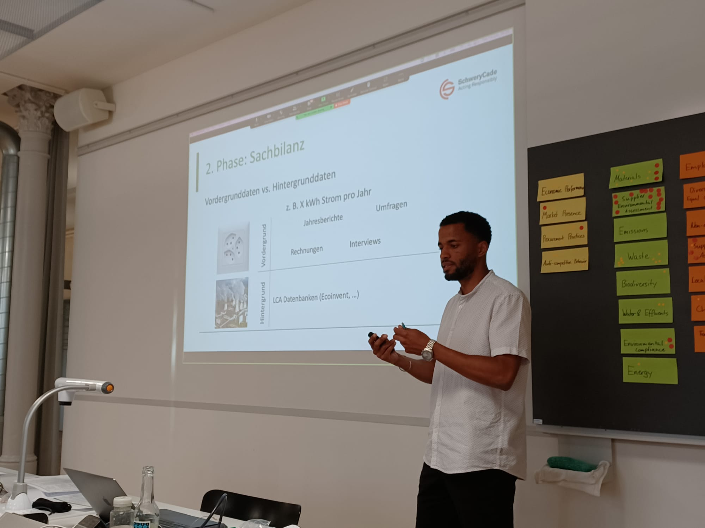

Portrait
EN-US
Le bureau de conseil TRANSITION accompagne les acteurs et actrices des domaines privés et publiques dans leurs démarches pour une société plus durable. Les conseils sont basés sur des modélisations qui permettent de prendre des décisions fondées, concrètes et rationnelles.
Transition
Le bureau de conseils propose une offre de services transparente, sincère et respectueuse des attentes. Les conseils sont basés sur une approche collaborative et la modélisation du sujet de l’étude par le biais de l’analyse de cycle de vie (ACV), une méthode scientifique permettant une analyse quantitative des impacts sur l’environnements d’un produit, d’un service, d’un évéenement, d’une entreprise, etc.
Les valeurs de l’entreprise sont l’efficacité, l’humanisme, l’honnêteté et la rigueur scientifique.
Léonard Marchand
Formé à l’Ecole polytechnique fédérale de Zürich (ETHZ), Léonard Marchand est ingénieur en environnement spécialisé dans la conception écologique de systèmes (Ecological System Design) et dans l’analyse de cycles de vie. Ayant la chance d’évoluer professionnellement dans le domaine du conseil depuis plusieurs années, il a pu perfectionner son approche des défis environnementaux. De langue maternelle francophone, Léonard parle couramment l’Allemand et l’Anglais.
